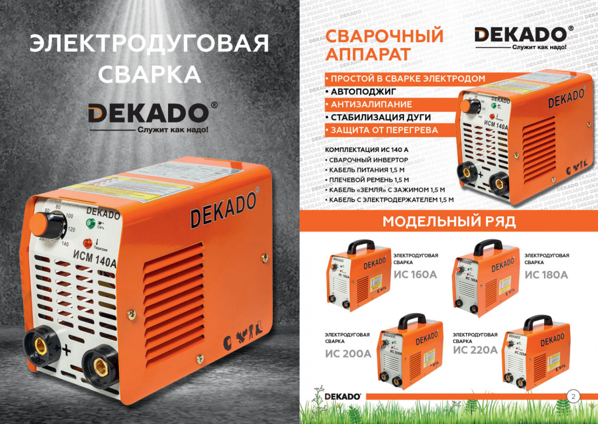

Владелец любого приусадебного участка, сада или огорода рано или поздно обязательно сталкивается с проблемой качественного ухода за газоном. Нужно избавляться от сорняков, стричь травы с мелким кустарником, и уничтожать растительность вокруг стационарных объектов на территории участка. Некоторые садоводы используют ручные механические средства, а именно косу или серп. Другие применяют газонокосилки. Однако бороться вручную с бурно растущей зеленью малопроизводительно и чрезвычайно утомительно, для газонокосилки требуется исключительно ровный рельеф поверхности. Поэтому и становится

Владелец любого приусадебного участка, сада или огорода рано или
поздно обязательно сталкивается с проблемой качественного ухода за
газоном. Нужно избавляться от сорняков, стричь травы с мелким
кустарником, и уничтожать растительность вокруг стационарных
объектов на территории участка. Некоторые садоводы используют
ручные механические средства, а именно косу или серп. Другие
применяют газонокосилки. Однако бороться вручную с бурно растущей
зеленью малопроизводительно и чрезвычайно утомительно, для
газонокосилки требуется исключительно ровный рельеф поверхности.
Поэтому и становится совершенно необходимым специальное
приспособление, которое называется ТРИММЕР.
Название этого инструмента происходит от английского слова,
обозначающего «стрижку». Сегодня распространены два основных вида
триммеров - бензиновые и электрические. Рассмотрим подробнее
каждый из этих видов садового инвентаря.
Электрический триммер можно применять для работы на участке
небольшой площади, расположенном около дома или сооружения, где
есть источник электроэнергии.
Сварочные аппараты инверторного типа нового поколения
09.07.2019Бензопила DEKADO БП 355 Новинка сезона!
09.07.2019Продукция компании DEKADO пополнилась насосным оборудованием
09.07.2019Бензопила DEKADO БП 355 Новинка сезона!
09.07.2019Продукция компании DEKADO пополнилась насосным оборудованием